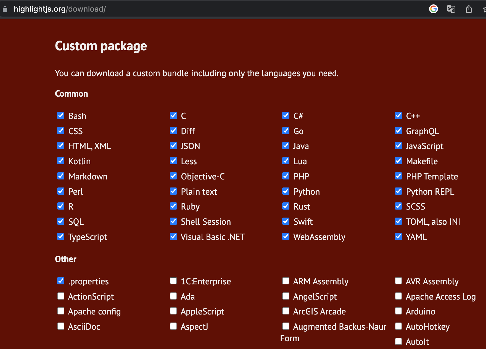
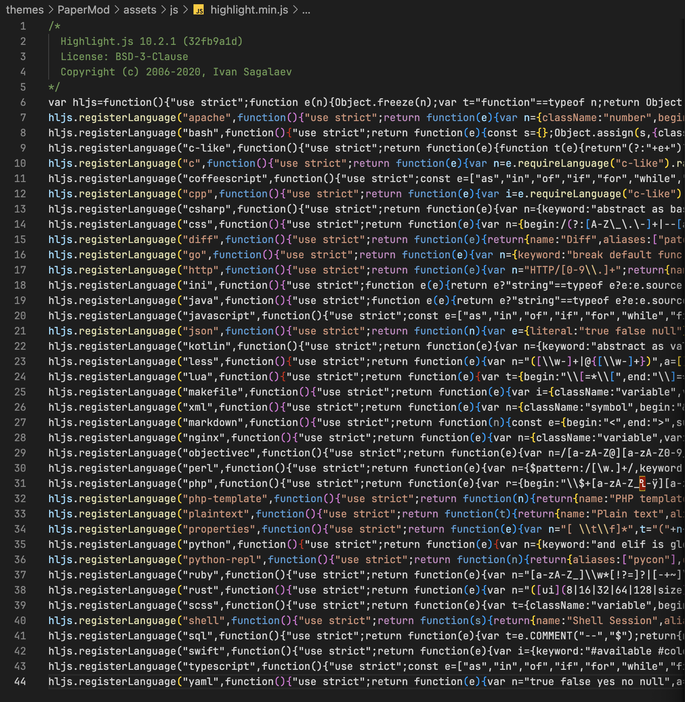
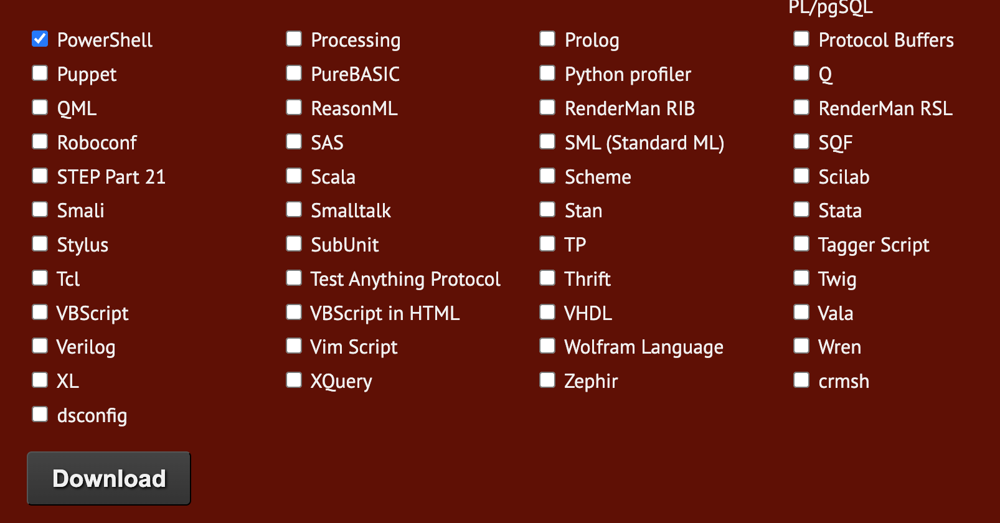
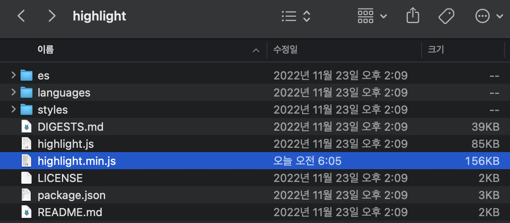

문제 상황
label Hugo로 블로그를 만들기 위해서 여러 가지 테마를 찾던 중 PaperMod라는 테마가 깔끔해서 해당 테마를 사용하기로 결정했다. 기본 설정을 마치고 Syntax highlight 테스트를 진행하던 중 PowerShell에 대해서는 Syntax highlight가 적용되지 않는 것을 확인하였다. hugo는 기본적으로 chroma를 code highlighter로 사용하며 chroma에서는 PowerShell을 기본 지원한다. 다른 테마를 사용했을 때는 PowerShell이 지원되는 것을 확인하였다.
원인
이 현상의 원인은 PaperMod가 기본 Code highlighter로 highlight.js를 사용하기 때문이다. highlight.js는 code highlighting을 적용하고자 하는 언어를 체크해서 해당 언어들만 highlighting이 가능하게 한다.

PaperMod는 highlight.js에서 지원하는 모든 언어를 지원하지는 않고 전체 언어 중 38개만 체크해서 적용한 것으로 보인다.
-
themes/PaperMod/assets/js/highlight.min.js
해결 방법
highlight.js 파일에 PowerShell 추가
첫번째로 highlightjs.org/download/ 페이지에서 PowerShell을 체크해서 highlight.js 파일을 다시 다운로드 받아 적용하는 방법이 있다.

다운로드 버튼을 클릭하면 highlight.zip 파일을 다운로드하게 된다. 압축을 풀면 아래와 같은 파일과 폴더들이 나오는데 그 중 highlight.min.js 파일을 theme/PaperMod/assets/js/highlight.min.js 파일에 덮어쓰면 된다.

Chroma 사용
앞에서 hugo는 code highlighter로 chroma를 기본 지원한다고 언급하였다. Chroma는 PowerShell 뿐만 아니라 Terraform도 지원한다. 이에 반해 highlight.js는 Terraform을 지원하지 않는다. Terraform에 대한 포스트도 블로그에 올릴 계획이었던 나로서는 기본 chroma를 적용하는 것이 더 나은 선택지이다.
PaperMod에서는 highlight.js를 disable하고 chroma를 적용하는 기능도 지원하고 있다.
toml 형식으로 변경하면 아래와 같다.
|
|